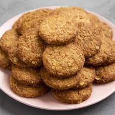

Galletitas de Avena (salen 6)

Ingredientes:
- 150 grs de harina de avena
- 3 cucharadas de miel
- 1 cucharadita de polvo para hornear
- Esencia de vainilla
- Limón rayado
Pasos a seguir:
- Precalentar el horno
- En un bowl se hecha la harina de avena, polvo para horenar,
la miel, la esencia de vainilla y por último el limón rayado
- Se mezcla bien hasta lograr una consistencia homogénea
- Corto 6 pedazos de la masa que hice en el bowl y las pongo en una sarten con fritolin
- Meto la sarten en el horno, los primeros 5 minutos el fuego tiene que
estar fuerte, los minutos restantes a fuego lento